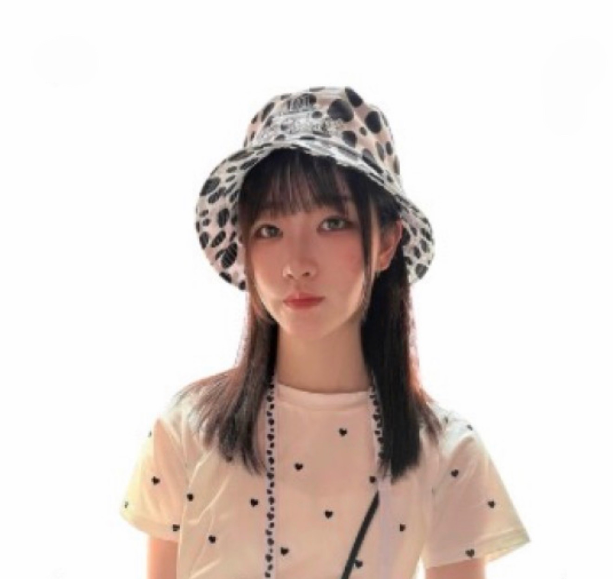
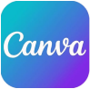
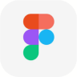
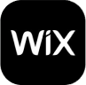
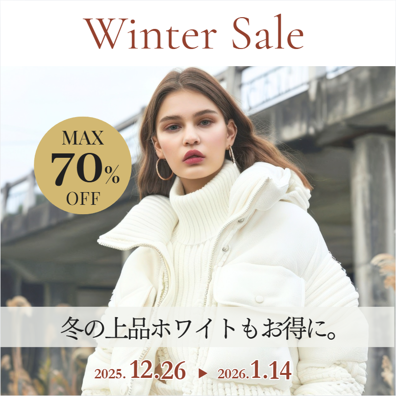
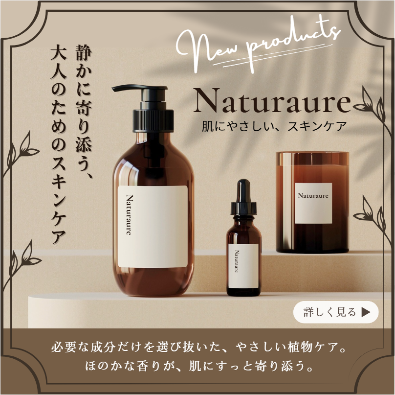
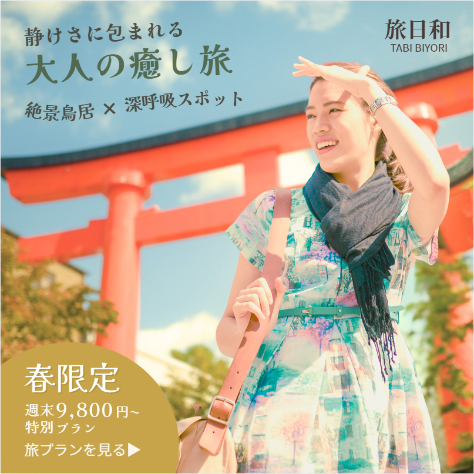
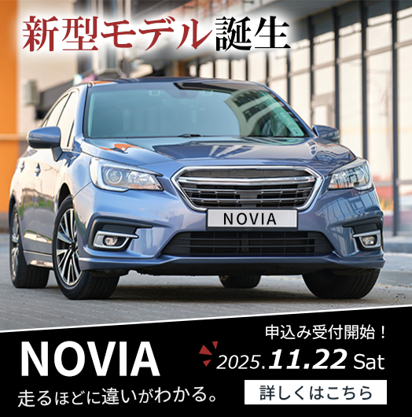

WORK DETAIL
- 目的
- 掲載媒体
- ターゲット
- 訴求内容
- 制作ポイント
- 使用ツール
- 制作時間
Kondo Misaki

近藤 美咲 Web designer
想いに寄り添ったデザイン制作を大切にし、
お客様の想いや目的を丁寧にくみ取りながら、伝わる表現へと落とし込みます。
その一つひとつを、世界に一つだけのデザインとして仕上げていきます。

バナー制作やSNSデザイン、
アイキャッチ画像の制作。
視認性や訴求力を意識した
デザイン制作に対応。

Webデザインの作成や
ワイヤーフレーム設計が可能。
レイアウト設計やUIデザイン
にも対応。
画像加工やレタッチ、
バナーのクオリティ調整が
可能。影や質感を加えた
デザイン制作にも対応。

ノーコードツールやHTMLを用いた
Webサイト制作が可能。
目的に沿ったサイト設計を
行います。




WORK DETAIL
「AN INNOVATIVE ENVIRONMENT」をテーマにした
コワーキングスペースの公式サイトを制作しました。
働く人の動きや空気感を、動きのある写真とタイポグラフィで
表現し、空間の活気や利用効率が伝わるデザインを意識しています。